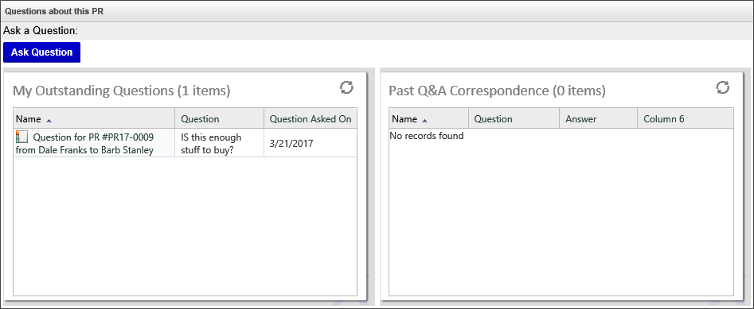
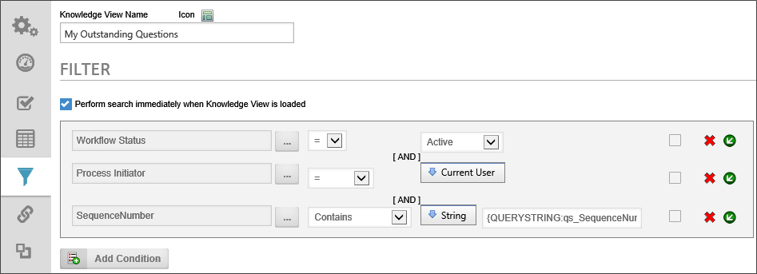
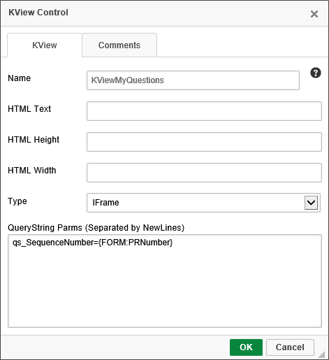
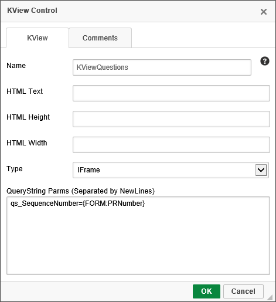
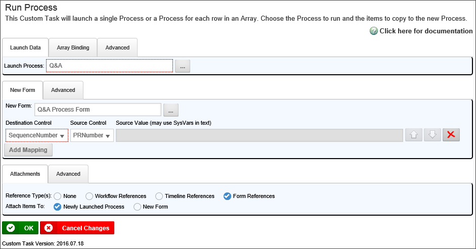
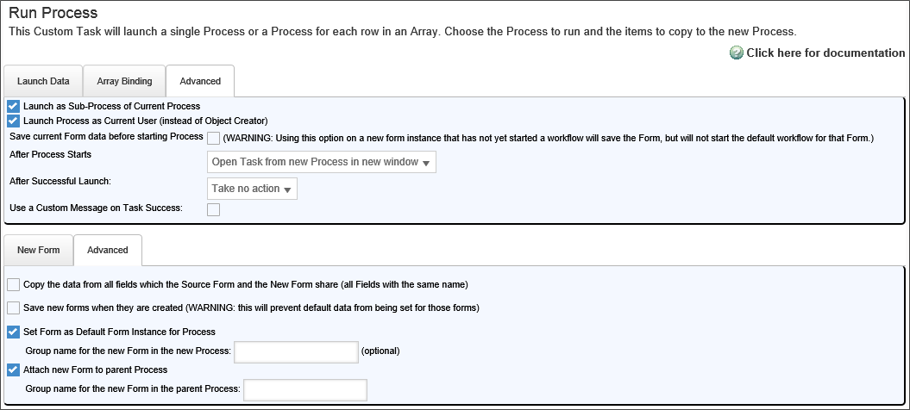
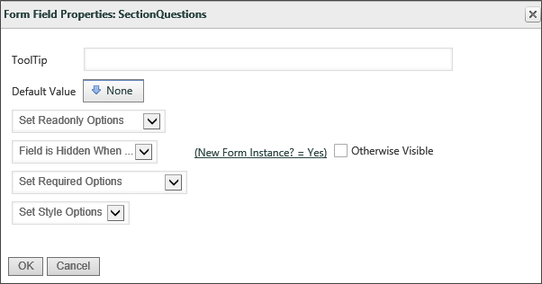

|
|
Lesson Contents | In this Lesson, you will learn how to add Knowledge View results to a Form. |
The Knowledge View control can be inserted on any Form to display a Knowledge View. The Knowledge View control is very useful for displaying information about other processes.
In the completed Purchase Request sample project for this training course, there is a Question and Answer subprocess that is incorporated into the Purchase Request sample project. This subprocess is used for participants to ask a question and receive an answer from another user. Because the Q&A process is separate from the main process, the Knowledge View control is a useful way of displaying the conversations in the main Form.

The Q&A process is a completely different process from the main sample project, with its own process, Forms, and as displayed above, its own Knowledge Views. Using the Knowledge View control enables us to display information from the process, and open the Q&A Form to view it. Additionally, because the Knowledge View control accepts filter parameters, we can display information in the Knowledge View control that is specific to the current user, by filtering the underlying Knowledge Views to display only instances in which the current user was a participant.
Let's take a closer look at the Sample project to see how the Knowledge View controls on the Form, and their underlying Knowledge Views, are configured.
First let's look at the My Outstanding Questions Knowledge View that is located in the Q&A folder of the sample project. The purpose of this Knowledge View is to display unanswered questions that the user has asked about a specific Purchase Request. Opening the definition of the Knowledge View and clicking on the Filter tab shows us the filters that are applied to the Knowledge View.

There are three filters for this Knowledge View:
It is the third filter that is important for our configuration setup, because this Query String needs to be provided from the Knowledge View control on the Purchase Request Form. In the Form template of the Purchase Request Form, the properties dialog box of the KViewMyQuestions Knowledge View control has the settings shown below.

Note that in the QueryString Parms property, the qs_SequenceNumber value is set to the value of the PRNumber field on the Form. When the Knowledge View runs in the Purchase Request Form, the Knowledge View control transmits the value of the PRNumber field to the Knowledge View via the qs_SequenceNumber Query String. In short, the Form uses the Query String to tell the Knowledge View what data to return.
A very similar setup is configured between the KViewQuestions Knowledge View control and the Past Q&A Correspondence Knowledge View.
With the above in mind, let's turn to the working version of our sample project, and recreate the functionality we've just seen.
The Q&A sample process has already been built for you, so you don't have to reconstruct it.
The Q&A process is located in the Q&A folder of the sample project, and contains the following objects:
We need to open the Purchase Request eform definition that is located in the Forms folder of the sample project. We need to open the editor to add some new controls to the template.
Immediately below the SectionComments section, add a new Section control. Set the Name of the Section control to "SectionQuestions", and set the Text property to "Questions about this PR".
Now, add a table with two columns and three rows inside the section. In Row 1, column 1, add the text "Ask a Question:". In row 2 of column 1, insert a Button control and set the Name property to "AskAQuestionButton", and the Text property to "Ask Question". We will configure the button further in the Form definition, after we finish adding the controls to the template.
Next, in row 3, column 1 of the table, insert a Knowledge View control and set the properties shown in the screen shot of the Knowledge View control's properties dialog for the KViewMyQuestions control displayed above.
In row 3, column 2, insert a Knowledge View control and set the properties shown below.

When you are done, save and close the Form template, to check it back in.
Once the Form template is checked in, go to the Custom task Event Mapping tab of the Purchase Request Form's definition. Add a Run Process custom task, and set the event for the task to the AskAQuestion button. Click on the Configure button to open the configuration dialog box, and configure the properties to match the samples shown below.


When you have finished configuring the Run Process Custom Task, click the OK button to close the dialog box and save the configuration. The button is now configured to launch the Q&A process in a separate window when clicked.
In our process we don't want to see the Q&A Section until after a new Purchase Request process has started, which means we don't want to see the section when the form is initially filled out by the user. So, on the Form Controls tab of the Form definition, open the field properties for the SectionQuestions control. Set the visbility property as "Field is Hidden When…", then set the condition to "New Form Instance = Yes".

Click the OK button to close the Form Field Properties dialog box, then update thForm definition to save the configuration changes you just made.
You have now finished implementing the Q&A process as a subprocess of the Purchase Request process.